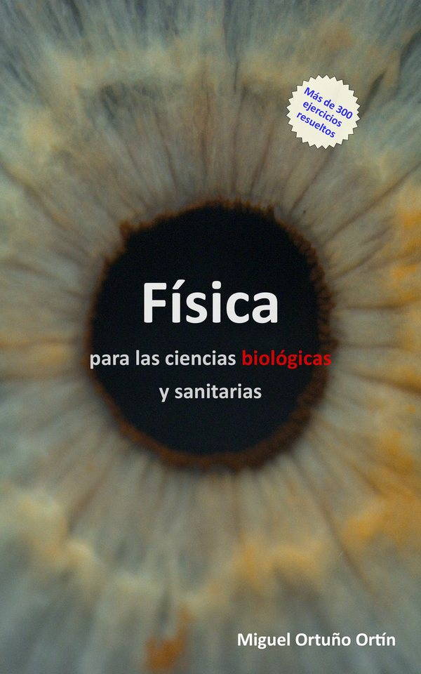

Física para las ciencias biológicas y sanitarias

Miguel Ortuño Ortín · Universidad de Murcia
Esta obra es un curso de física dirigido fundamentalmente a los estudiantes de primer curso de las carreras pertenecientes al área de ciencias biológicas y sanitarias: Biología, Bioquímica, Biotecnología, Ciencia y Tecnología de los Alimentos, Enfermería, Farmacia, Medicina y Veterinaria, entre otras. Cubre prácticamente todos los programas de física de estas titulaciones.
El libro es autosuficiente y no requiere conocimientos previos de física. El énfasis principal está en la explicación física de los principales fenómenos y órganos biológicos, así como de las técnicas instrumentales más importantes en ciencias de la salud. Incluye multitud de ejercicios, todos ellos solucionados.
Disponible en versión electrónica en Amazon.
¿A quién va dirigido?
Es un libro de física pensado para quien llega a la universidad sin haber cursado física, o habiéndola dejado hace tiempo. Se usa como manual de asignaturas de física de primer curso en grados como:
- Física para Biología, Bioquímica y Biotecnología
- Física para Medicina y Enfermería
- Física para Farmacia y Veterinaria
- Física para Ciencia y Tecnología de los Alimentos
- Biofísica y física aplicada a las ciencias de la salud
Cada tema parte de cero y se apoya en ejercicios resueltos paso a paso —más de trescientos en total— con aplicaciones a órganos y fenómenos biológicos y a las técnicas instrumentales habituales en el ámbito sanitario: circulación sanguínea, respiración, impulso nervioso, audición, visión, microscopía o radiaciones ionizantes.
Capítulo de muestra
- PDF Dinámica de fluidos — descarga directa
Índice
- Conceptos introductorios
- Cinemática
- Dinámica
- Energía
- Estática
- Elasticidad
- Estática de fluidos
- Dinámica de fluidos
- Termodinámica
- Procesos de transporte
- Oscilaciones y ondas
- El sonido
- Electricidad
- Impulso nervioso
- Biomagnetismo
- Ondas electromagnéticas
- Óptica
- Física de la visión
- Microscopios
- Física moderna
- Radiaciones ionizantes